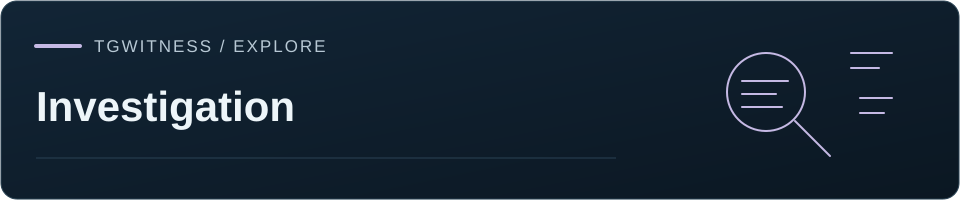
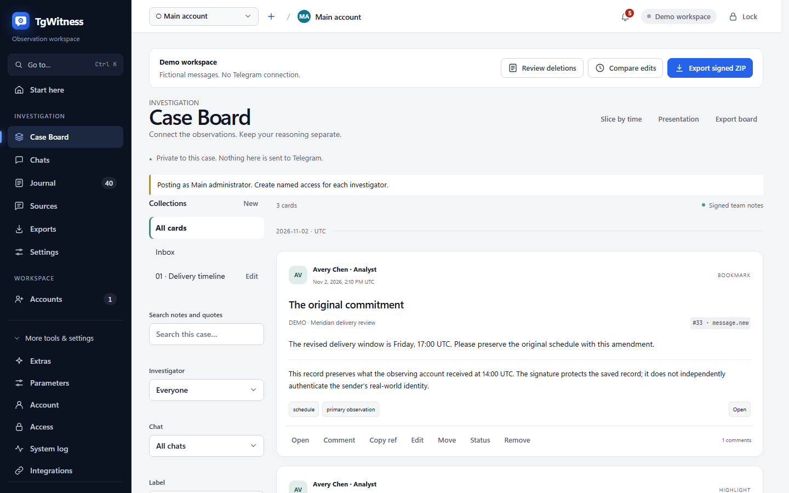

Odniesienie / Archiwum i integracje
Odniesienie do Case Board
Zakładki, dokładne zaznaczenia, fragmenty działań, dyskusje, dostęp z ograniczeniami oraz historia podpisanych adnotacji wykorzystywana przez Case Board.
TgWitness / Dokumentacja · Dochodzenie

Case Board zapewnia zespołowi śledczemu wspólny widok zapisanych materiałów. Można dodać do zakładek swoje spostrzeżenia, zaznaczyć konkretny fragment, zapisać sekwencję działań i omówić je z kolegami. Karty zachowują odniesienia do źródeł oraz podpisaną historię zmian. Adnotacje zespołu pozostają w przestrzeni roboczej i można je odróżnić od oryginalnych obserwacji z Telegrama.
Model dowodowy · Dostęp · Raporty

Praca nad sprawą#
Otwórz opcję „Dochodzenie” → „Case Board” w trybie standardowym lub eksperckim. Język dostosowuje się do panelu. Użyj przycisku „Dodaj do tablicy” obok wpisu w dzienniku lub zapisanej wiadomości czatu albo zaznacz go i naciśnij klawisz B. Zakładka zostanie dodana do skrzynki odbiorczej jednym kliknięciem. Edytuj jej tytuł, etykiety i notatkę lub przenieś ją do kolekcji. Zmieniona karta zawiera podpisany wariant; jej usunięcie zachowuje historię zmian.
W przypadku pierwszej sprawy wybierz zbiór i dodaj zapisy, które odpowiadają na jedno pytanie. Użyj komentarzy, aby przejrzeć interpretację, a następnie funkcji „Prezentacja”, aby przejrzeć karty i kontekst źródłowy. Wybierz materiały do tablicy sprawy osobno w Report Studio podczas przygotowywania dostarczanego dokumentu. Zapisanie fragmentu nie powoduje automatycznej konfiguracji filtrów danych raportu.
Zaznacz tekst w zapisanej wiadomości czatu, aby wyświetlić opcję „Podświetl → tablica”. Wybierz kolor i dodaj notatkę. Serwer sprawdza dokładny cytat i zapisaną wersję, w tym emoji, tekst pisany od prawej do lewej (RTL) oraz znaki łączące. Interfejs nie odwzorowuje zaznaczenia w tekście zamaskowanym lub przekształconym.
Kliknij z wciśniętym klawiszem Shift dwa zapisy w jednej rozmowie, aby utworzyć wycinek między nimi, użyj opcji „Wycinek według czasu” lub zapisz aktualne filtry dziennika dotyczące rozmowy, okresu i rodzaju zdarzenia. Zapisany wycinek ma własny, wiążący predykat: otwarcie go w dzienniku powoduje również zastosowanie filtrów dotyczących wielu rozmów, limitów liczby wiadomości oraz uczestników . Opcja „Pokaż rekordy dodane od momentu utworzenia zakładki” wyodrębnia późniejsze dodania. Zmiana filtrów w Journal powoduje wyjście z fragmentu. W sekcji „Osoby” opcja „Podziel działania tej osoby” wykorzystuje zarejestrowany identyfikator podmiotu; nie zakłada się, że autor wiadomości edytował, usunął lub zareagował na wiadomość.
Okno dialogowe „slice” wyświetla podgląd liczby elementów przed zezwoleniem na utworzenie. Termin „all” obejmuje wszystkie zarejestrowane rodzaje zdarzeń,
w tym migawki, edycje, usunięcia, reakcje, aktualizacje członkostwa/usług, własne działania,
przyciski, wyniki multimedialne, odzyskane wiadomości oraz przyszłe rodzaje zdarzeń. Wybór opisuje
zapisane obserwacje. Powiadomienia o usunięciu nieznanych czatów stanowią odrębny kontekst,
dostępny wyłącznie dla użytkowników z dostępem do całego obszaru roboczego, nigdy nie przypisywany do żadnego z wybranych czatów.
Kolekcje mają określony zakres czatu. Pusty zakres oznacza cały obszar roboczy. Kolekcja nie może zawierać kart spoza swojego zakresu; uczestnik z ograniczonym dostępem do czatu nie może przeglądać szerszej kolekcji. Skrzynka odbiorcza to wirtualna kolekcja dla kart nieprzypisanych. Wyszukiwanie i filtry obejmują wyłącznie widoczne karty; wątki i wzmianki dziedziczą uprawnienia dostępu karty nadrzędnej. Usunięte komentarze mają znacznik usunięcia w dyskusji. Historia przeglądania nie jest rejestrowana.
Tryb prezentacji otwiera wszystkie karty w wybranej kolekcji, oferując widoki „Karta”, „Kontekst źródła” i „Komentarze zespołu” oraz klawisze nawigacyjne „Poprzednia/Następna”. Nie udostępnia on żadnych elementów do edycji. Zwykły strumień danych jest podzielony na strony; tryb prezentacji ładuje listę w postaci stron i wyświetla szczegóły jednej karty na raz.
Uprawnienia#
Wszystkie operacje wymagają uprawnień do view, zakresu obszaru roboczego/czatu oraz board.read. board.write umożliwia dodawanie kart,
komentarzy, przenoszenie oraz ustawianie statusów „otwarte” i „sprawdzone”. board.manage pozwala na zarządzanie zbiorem,
statusami „potwierdzone” i „odrzucone” oraz wprowadzanie zmian i usuwanie kart innych użytkowników. Status jest decyzją zespołu,
a nie wynikiem weryfikacji kryptograficznej.
Dostęp do gotowych ustawień formularzy: Recenzent = odczyt; Analityk = odczyt/zapis; Operator = odczyt/zapis/zarządzanie, oprócz ich dotychczasowych uprawnień. Istniejące uprawnienia nie powodują automatycznego nabycia nowych praw. Główny administrator posiada wszystkie uprawnienia i publikuje jako Główny administrator. Należy stosować uprawnienia nazwane w celu przypisania autorstwa. Wymieniono wyłącznie bieżące uprawnienia dostępu umożliwiające odczytanie całej karty nadrzędnej.
Uprawnienie do czatu A nie pozwala na uzyskanie karty ani fragmentu dla A+B, nawet poprzez odgadnięcie jego identyfikatora lub podanie
fałszywego identyfikatora target.chat_id. Metadane docelowe są ustalane na podstawie podpisanego skrótu zdarzenia na serwerze.
Zbiory, liczba dyskusji, powiązane karty i powiadomienia na żywo są filtrowane przed wysłaniem odpowiedzi.
exporty wymagają uprawnień export oraz board.read; istniejący eksporter bez dostępu do tablicy otrzymuje
zwykłe archiwum dowodów bez notatek zespołu. SSE ponownie sprawdza aktualne uprawnienia przed każdą partią.
Przechowywane umowy#
Podobnie jak obserwacje, adnotacje są zapisywane transakcyjnie w tabeli SQLite typu „tylko dodawanie” w
obszarze roboczym. Plik annotations.jsonl stanowi jej dokładny, kanoniczny eksport z tej samej migawki odczytu, co
plik events.jsonl. Nie ma drugiego, konkurencyjnego magazynu adnotacji ani zdarzenia dziennika board.activity.
Każda linia zawiera dokładnie:
{
"seq": 1,
"at": "2026-11-02T14:00:00.000+00:00",
"access_id": "admin",
"access_label": "Main administrator",
"kind": "board.bookmark",
"payload": {"id": "32 lowercase hex digits", "target": {"event_hash": "64 lowercase hex digits"}},
"previous_hash": "64 zeroes for the first record",
"hash": "SHA-256 described below",
"signature": "base64 Ed25519 signature"
}Powyższy skrócony przykład ilustruje strukturę danych; rzeczywiste dane użytkowe zawierają domyślne wartości modelu
oraz pola docelowe ustalane przez serwer. Schematy żądań API znajdują się w katalogu
tgwitness/schemas i są generowane na podstawie modeli Pydantic
w czasie wykonywania przez narzędzie python tools/build_board_schemas.py w języku Python. Dodatkowe pola żądania są odrzucane. Identyfikatory są
generowane po stronie serwera, jeśli nie zostaną podane. Autorstwo, czas, migawka i podpis nie mogą być podane
przez wywołującego. Identyfikatory nazwanych uprawnień są zgodne z istniejącym formatem Access (16 znaków szesnastkowych); identyfikatory kart mają długość 32 znaków szesnastkowych.
Kanoniczny format JSON to UTF-8, posortowane klucze obiektów, brak spacji między tokenami, nieeskapowany Unicode,
oraz brak wartości NaN/nieskończoności. Skrót adnotacji to SHA-256 kanonicznego obiektu zawierającego
format: "tgwitness-annotations-v1" oraz wszystkie siedem pól koperty aż do previous_hash.
Ten tag formatu oddziela domenę skrótu od obserwacji. Podpisem jest Ed25519 nad
32 surowymi bajtami skrótu. Sekwencja zaczyna się od 1. Wersje poprawione zachowują identyfikator karty i podają nazwę poprzedniego
skrótu adnotacji w polu „supersedes”; nie mogą zmieniać zakresu czatu. Przeniesienia, statusy i usunięcia są
oddzielnymi rekordami. Tabela SQLite odrzuca polecenia UPDATE i DELETE.
Plik case-board.json zawiera {statement, signature}. Kanoniczne oświadczenie jest podpisane przez
klucz obszaru roboczego i zawiera format: "tgwitness-case-board-v1", public_key, created_at,
journal_head, meaning oraz state. Stan jest deterministycznym odtworzeniem: annotations_head,
uporządkowaną tablicę items (kolekcje, karty, komentarze, w tym „tombstones”) oraz status_history.
Elementy zachowują swój ostatni skrót adnotacji, sekwencję, autora i czas, a także pierwotnego
twórcę i czas utworzenia we wszystkich wersjach. Odtwarzanie sprawdza wersje,
elementy nadrzędne, odniesienia do kolekcji oraz zduplikowane identyfikatory akcji. Plik `manifest.json` i nowe punkty kontrolne
również wiążą `annotations_head`. Należy zachować punkt kontrolny niezależnie, aby wykryć skrócenie lub przepisanie
za pomocą skopiowanego klucza podpisu.
Wersje tekstowe#
range.start to przesunięcie punktu kodowego Unicode liczone od zera, length to dodatnia liczba punktów kodowych,
a quote musi być równe dokładnemu podciągowi payload.text lub payload.caption w docelowym
zdarzeniu. Nie stosuje się NFC/NFKC, zamiany wielkości liter ani normalizacji grafemów. Fragmenty ciągów znaków w Pythonie oraz
metoda JavaScript Array.from(text) realizują to samo indeksowanie. Połączenie znaków i emoji ZWJ może
zajmować kilka punktów kodowych. range.version to skrót zdarzenia docelowego, a nie bieżąca wersja wiadomości
ani przesunięcie encji UTF-16 w Telegramie. Późniejsze edycje nigdy nie powodują automatycznego przeniesienia zaznaczenia.
Podział według tożsamości i czasu#
query akceptuje dokładnie jeden identyfikator chat_id lub niepuste chat_ids, opcjonalny zakres from/to,
zakresy identyfikatorów wiadomości z obydwoma granicami (tylko jeden czat), kinds: "all" lub dokładne/prefiksowe rodzaje z symbolami wieloznacznymi,
jawni actors, search, hide_system oraz include_unscoped. Grupy rodzajów dziennika rozszerzają się do
ich dokładnych predykatów. Wyszukiwanie wykorzystuje wyszukiwanie ładunku dziennika z uwzględnieniem NFC i ignorowaniem wielkości liter bez zmiany
podpisanego tekstu źródłowego. Daty wymagają strefy czasowej i są normalizowane do czasu UTC.
Daty filtrują pole `observed_at`. Pole `source_at` z Telegrama jest wyświetlane oddzielnie. Usunięcie bez
znacznika czasu źródłowego nie ma wygenerowanego czasu usunięcia. Późniejszy zapis zaobserwowany poza przedziałem czasowym
nie jest do niego włączany; fragment identyfikatorów wiadomości może obejmować późniejsze usunięcie dla tych identyfikatorów wiadomości.
snapshot ustala czas utworzenia, sekwencję dziennika/granicę skrótu, liczbę dopasowań, pierwszą/ostatnią
sekwencję oraz result_hash. Ten ostatni to skrót SHA-256 kanonicznej tablicy JSON w formacie UTF-8 zawierającej dopasowane
skróty zdarzeń posortowane leksykograficznie, w tym [] dla pustego fragmentu. Zawiera on również dokładną
liczbę rodzajów oraz miniaturę czasu obserwacji z 24 przedziałami. Wycinek przechowuje zapytanie, a nie zduplikowane rekordy źródłowe
. Podczas eksportu plik `board/slices/<id>.json` zawiera listę aktualnych skrótów oraz dodanych/usuniętych sekwencji.
Weryfikator odtwarza pierwotny wynik na granicy utworzenia, a następnie wynik bieżący.
Dodane rekordy są zgłaszane jako fakt zmiany. Usunięcie pierwotnego zdarzenia przerywa niezmienny
łańcuch dowodów; nie jest to akceptowane w milczeniu jako zwykłe usunięcie z fragmentu.
Migawki reakcji zawierają niekompletne listy ostatnich uczestników. Eksplorator porównuje sąsiednie migawki tej samej rozmowy/wiadomości, w tym poprzednią migawkę spoza wybranego fragmentu, i zgłasza zagregowane różnice w liczbie między obserwacjami. Brak ostatnich uczestników nie oznacza, że usunęli oni reakcję. Pierwsza migawka nie ma wywnioskowanego wcześniejszego stanu. Obserwacje uczestników pozostają przypisane do migawki, w której zostały dostarczone, a nie do wymyślonego czasu działania.
API i eksporty#
GET /api/board akceptuje parametry collection/chat/author/label/state/from/to/q/kind/comments, offset/limit
oraz kolejność newest/oldest. GET /api/board/card/{id} zwraca kartę, podgląd źródła, wątek,
historię statusów oraz powiązane karty. Podtrasa participants zwraca dopuszczalne opcje wzmianek.
POST /api/board/{bookmark|highlight|slice|collection|comment|status|move|remove} dodaje rekord.
POST /api/board/slice-preview oblicza zapytanie. Rekordy fragmentu są paginowane w
GET /api/board/slice/{id}/records; ponowne obliczenia zawsze wykorzystują aktualną stabilną migawkę odczytu.
/api/stream na żywo wysyła powiadomienia z tablicy board bez ładunku, niezależnie od wskaźników dziennika.
GET /api/board/export zwraca podpisany dokument. Dostęp ograniczony do czatu otrzymuje wyraźnie oznaczone
podpisane ujawnienie, nigdy adnotacje z innego czatu ani pełny łańcuch. Pełne pliki ZIP z dowodami
zawierają plik annotations.jsonl, podpisany plik case-board.json oraz załączniki JSON z fragmentami. Ustawienia raportów HTML/PDF/JSON
pozwalają wybrać opcję bez tablicy, zakładki/wycinki bez dyskusji lub karty z komentarzami. Sekcja ta
wyraźnie oddziela opinie zespołu od obserwacji. Filtry danych raportu ograniczają również
widoczne notatki; pełne, podpisane pliki źródłowe w pliku ZIP z dowodami pozostają kompletne.
GET /api/board/slice/{id}/export generuje podpisany fragment JSON o nazwie „tgwitness-board-selection-v1”;
?format=csv generuje wygodną tabelę bez oddzielnego podpisu. Należy zachować formaty JSON i ZIP:
python -m tgwitness.verify evidence.zip --fingerprint TRUSTED_KEY_SHA256 --board
python -m tgwitness.verify board-slice.json --evidence evidence.zip --fingerprint TRUSTED_KEY_SHA256
python -m tgwitness.verify case-board.json --evidence evidence.zip --fingerprint TRUSTED_KEY_SHA256Kontrola wyboru uwierzytelnia podpisane oświadczenie, dokładność rekordów źródłowych oraz kompletność zapytania w określonym zakresie. Plik ZIP z dowodami może być nowszy, ale musi zawierać ten prefiks. Brakujący cel jest wyraźnie zgłaszany. Odmienna oryginalna migawka fragmentu, zmieniona adnotacja, niezgodny stan odtwarzania lub zmienione źródło powodują niepowodzenie. Stare archiwa bez adnotacji zachowują dotychczasowe zachowanie weryfikacyjne.
Domyślnym ustawieniem przekazania jest opcja „Nie uwzględniaj”. Wyraźne włączenie powoduje wyświetlenie kart projektów w już
zminimalizowanych zapisach, pomija niedostępne/pominięte elementy docelowe, nie ujawnia zaznaczeń, których tekst źródłowy
został zminimalizowany, oczyszcza tekst zespołu zgodnie z tymi samymi zasadami dotyczącymi wzmianek/kontaktów oraz opcjonalnie zastępuje
etykiety śledczych oznaczeniami R01, R02… w metadanych i znanych wystąpieniach w notatkach. Nie ujawnia się oryginalnego pliku „
annotations.jsonl”. Podpisany plik pomocniczy „tgwitness-case-board-handover-v1” oraz raport
zawierają ten sam zminimalizowany materiał. Liczba fragmentów odnosi się wyłącznie do ujawnionych rekordów, przy czym oryginalne
szczegóły dotyczące podmiotów z migawek/zapytań są ukrywane. Nazwy w tekście swobodnym, nieznane programowi minimalizującemu, nadal wymagają
weryfikacji, tak jak ma to miejsce w przypadku zwykłych przekazów. Niniejsza wersja pochodna nie ma na celu zachowania oryginalnych
podpisów adnotacji po redakcji.
Ograniczenia operacyjne#
Parametry obejmują limity miękkie wynoszące 10 000 kart i 50 000 komentarzy, stronę wyciągu zawierającą maksymalnie 5 000 rekordów oraz kontrolę podglądu multimediów. Limity miękkie generują ostrzeżenia bez usuwania historii. Strony kanałów zawierają maksymalnie 200 kart. Samodzielne fragmenty w formacie JSON są ograniczone do 64 MiB; w przypadku większych materiałów należy zawęzić zapytanie lub skorzystać z podpisanego pliku ZIP. Samodzielny weryfikator ogranicza odtwarzanie adnotacji do 256 MiB. Case Board nie obsługuje ani nie wdraża zewnętrznych powiadomień o komentarzach.
Zautomatyzowana akceptacja funkcji wykorzystuje fikcyjne dane i symulowany transfer danych z Telegrama w celu sprawdzenia przechowywania, dostępu, renderowania i eksportu. Zakres kontroli dowodów przedstawiono w sekcji „Zakres weryfikacji ”.